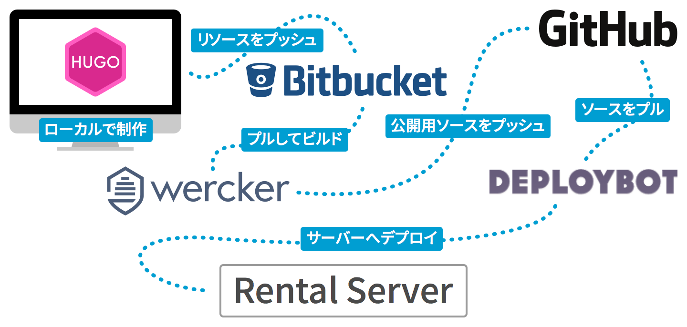

サイトをリニューアルついでに、WordPressからHugoへ乗り換えました。
そもそもWordPressはブログ以外に使っていなかったにも関わらず、アップデートやらセキュリティやらを気にするのにも疲れておりまして、Static Site Generatorへ乗り換えようと思っていました。
Static Site Generatorといえば、JekyllやMiddlemanなどが知られていると思います。
私自身もサイトの一部のカテゴリーで、JekyllをラップしたようなGUIツールであるmixtureを使っていました。
もちろん、それに移行する手もあったのですが、たった数ページの変換にも結構な時間を取られていたことや、そもそも開発・サービスが終わってしまったこともあって、その選択肢を取ることはできませんでした。
そんな折、Hugoという単語を見かけるようになり、変換が早いと聞き及んだため「んじゃ、これで試してみるか」ぐらいの勢いで乗り換えを行いました（ちなみに移行そのものは、1年ぐらい前から計画していたんですね…）。
あとは、Press, Blogs and Media Coverageにまとめられている日本語のページをご覧ください。
ちなみにどれぐらい早いかというと、記事84ページ ＋ カテゴリー14ページ ＋ タグ46ページをローカル環境で変換して150ms前後です。先述のmixtureを使って5ページ分をいわゆるビルドすると、正確には測っていませんが少なくとも2分ぐらいはかかっていました。
というわけで、今回はWordPressからHugoへ移行して、デプロイまでを自動化したその概要をお伝えします。大まかな手順は次の通りです。
- Hugoの準備
- WordPressからHugoへコンテンツの変換
- テンプレート作成
- ビルドとデプロイ環境の準備
Hugoの準備
Hugoは、Go言語で作られたStatic Site Generatorです。Go言語自体のインストールは不要で、各プラットフォームのパッケージをインストールすれば使うことができます。
OSXをお使いでHomebrewがインストールされていれば、次のコマンドでもインストール可能です。
$ brew install hugo
Hugoでは初期化したりビルドインサーバーを立ち上げたりと、多少なりともターミナルでの操作が必須です。とはいえ、そこまで難しい操作はなく、ターミナルの操作に多少慣れていれば十分に扱えるでしょう。
コンテンツをWordPressからHugoへ変換する
「WordPress to Hugo Exporter」というWordPressのプラグインを使用して、投稿している記事やページをMarkdownへ変換しました。変換したものはZIPでダウンロードできます。画像関連もこの中に含まれているので、別途ダウンロードする必要はありません。
ただ、WordPressのアップローダを使ってアップしたものはwp-content/uploads/へ格納されており、変換したMarkdownでもそのフルパスで画像の場所が記述されています。
新しいサイトではリソースの位置を変更したため、それに合わせてSublime Textの［Find → Find in Files…］でディレクトリを指定して一括で書き換えました。
テンプレート作成
テンプレート（いわゆるテーマ）については、他のStatic Site Generatorと同じように、テンプレートファイルを作成し、その中にスクリプトを埋め込んでいきます。
今回はHTMLを使って記述しましたが、Go言語のHTMLテンプレートエンジンであるAceやAmberを使って、JadeやSlimのように記述することもできるようです。
作成方法などの詳細を書くと長くなってしまいますので割愛しますが、例えばブログ記事一覧はこんな感じになっています。
{{ partial "head.html" }}
<header class="siteHeader{{ if eq .Title "creative tweet." }} is-top{{ else }} is-{{ lower .Title }}{{ end }}" role="banner">
{{ partial "header.html" }}
</header>
<h1 class="cat_title icon-{{ .Title }}">{{ lower .Title }}</h1>
<div class="container">
<main role="main" class="main">
{{ range .Data.Pages.GroupByDate "2006" }}
<section class="articleGroup">
<h2 class="articleList_cat-key">{{ .Key }}</h2>
<ul class="articleList">
{{ range .Pages }}
{{ .Render "li"}}
{{ end }}
</ul>
</section>
{{ end }}
</main>
</div>
{{ partial "footer.html" }}
partialでは他のファイルを読み込んだり、{{ .Title }}では記事のタイトルを読み込んだりしています。
自分で作成しなくともテーマが配布されているので、そこからカスタマイズするということも可能です。
ページの作成
ページの内容そのものを作るには、初期化して作成されるcontentディレクトへMarkdownファイルを作成し、ファイルの先頭にタイトルや日付・カテゴリーなどの設定を記述してから記事を書き始めます。
次のコマンドを実行すると、その雛形が記述された状態でファイルを生成してくれます（雛形も自分で作成できます）。
$ hugo new path/to/filename.md
また次のコマンドを実行するとビルドインサーバーが立ち上がり、表示されたURLへアクセスすればブラウザで確認することができます。ちなみに--watchは、ライブリロードを有効にするオプションです。
$ hugo server --watch
ビルドとデプロイ環境の準備

最終的にビルドしてサーバーへデプロイ（アップロード）する必要があります。
以前はWordPressを使ったり、WordPress管理外ファイルはFTPSを使っていたり、ファイルの管理面でも一部だけGitで管理していたりと、いろいろとごちゃごちゃになっていました。
今回は、サイト全体をGitで管理しつつ最終的なデプロイもこれに絡めてやってみようということで、CIサービスのwerckerとDEPLOYBOTを使うことにしました。
公開までの流れは無駄なリソースを使っている感じですが、次のようにしています。
- ローカルで記事の作成やレイアウトなどの開発→適当にコミット
- 最終的な確認ができたらBitbucketのプライベートリポジトリへプッシュ
- Bitbucketへプッシュされたら、Werkerでデータをプルしてビルド
- ビルドが成功したら、そのデータをGitHubの公開リポジトリへデプロイ（プッシュ）
- GitHubへデプロイされたら、DEPLOYBOTでFTPSを使ってレンタルサーバーへデプロイ
設定などの詳細はこれまた割愛しますが、私は2を実行するだけで開発データはBitbucketへ、ビルドした公開データはGitHubへバックアップしつつ、自動的に公開までできるようになりました。
もちろんそれぞれにコミットが残っているので、ロールバックも簡単にできます。
ちなみにGitHub Pageを使えば4で終わるのですが、ものの試しでDEPLOYBOTを使ってみようかなと思って、あえてレンタルサーバーで公開するようにしています。
あとURLがどうしても変更になってしまうため、必要に応じて.htaccessでリダイレクトするように設定しました。
WordPressからHugoへ移行してみて
まずは「サイトにログインして、画像をアップして…」という煩わしさがありません。ローカルでほぼ完結するので、プレビューが正しければ、そのままプッシュするだけというのは、実にラクです。
コメント欄をつけられないなどの課題もありますが、そこは外部サービスに頼ったりすれば解決できるかなと。
自サイトを実験の場として使っているかたもいらっしゃると思うので、手放しでおすすめできるものではありませんが、記事を書くだけというのであれば、移行を考えてもいいんじゃないでしょうか。
今回割愛した部分は、また日を置いて公開できればと思います。